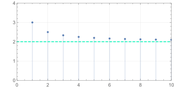

sequences
So far we have seen functions with a real variable, in this chapter we will study the subclass of functions whose variable belongs to natural numbers, we emphasize this aspect introducing new notation and terminology for these functions:
Definition 1 A succession \(u\) of variable \(n\) is a discrete domain function, that is:
\[ \begin{align} u : \mathbb{N} &\longrightarrow u(\mathbb{N}) \subset \mathbb{R}\\n &\longmapsto u_n \end{align} \]
where \(u\) is the “name” we choose for a set of operations that, applied to a certain value of \(n \in \mathbb{N}\) result in the value \(u_n\) of the set \(\mathbb{U}\).
From the definition it is clear that the codomain of the sequence \(u\) is a subconjunto de \(\mathbb{R}\) while the range \(\mathbb{U}\) is given by listing the values \(u_n\) for each \(n \in \mathbb{N}\):
\[ u(\mathbb{N}):= \{u_1,u_2,\dots,u_n, \dots\} \]
One usually also refers to the function \(u\) as the following as the sequence of numbers
\[ (u_n):=(u_0,u_1,u_2,\dots,u_n,\dots) \]
which resembles the notation used for row vectors.
Once we have in hand an analytical expression for \(u_n\) naturally we want to know describe its evolution over \(n\). We describe it by answering the following questions:
- Does it increase, decrease or is it constant? Study the local and global monotony of the succession.
- What is the behavior of \(u\) when \(n\) is it too big?
- How similar is the behavior of \(u\) with other sequences? (Skip)
- Maximum and minimum points? (Skip)
1. Rate of change of a sequence
Consider the following function:
\[ \begin{align} u : \mathbb{N} &\longrightarrow \mathbb{R}\\n &\longmapsto u_n := (n-3)^2-4 \end{align} \]
Computing the sequence:
\[ (u_1,\dots,u_9) = (0,-3,-4,-3,0,5,12,21,32) \tag{1}\]
we arrive at the blue graph:

Observing the graph (or the Equation 1), how does \(u_n\) evolve in this interval?
\(u_n\) decreases for \(n=1,2\), i.e., \((u_1,u_2)\) is a decreasing sequence.
\(u_n\) increases for \(n=3,4,\dots,9\), i.e., \((u_3,\dots,u_9)\) is an increasing sequence.
It has a minimum at \(n=3\).
We can arrive at this description by comparing instead the points \(u_{n+1}\) and \(u_n\). Compare means in this case to compute the difference. This is what we call the “derivative” of \(u_n\):
\[ [\text{derivative of}\,\, u_n]:\iff v_n:=u_{n+1}-u_n \]
This \(v_n\) function is \(2n-5\) and its sign indicates whether the function increases, decreases or is locally stationary; locally means close to a given \(n\).
Recall the average velocity definition:
\[ [\text{average velocity between $t$ and $t_0$}]:= \frac{x(t)-x(t_0)}{t-t_0} \]
is analogous to the velocity of \(u_n\):
\[ \frac{u_{n+1}-u_n}{n+1-n}=v_n \]
This \(v_n\) function describes the local behavior of \(u_n\) around \(n\), extending that description across all \(n\) (as we do with the derivative of any function) we get the regions of \(n\in\mathbb{N}\) where our \(u_n\) increases, decreases or is stationary.
In particular, at one extreme we can find an all decreasing function, at the other extreme an all increasing function, at the middle a constant function. In between, we find functions that many decrease sometimes and increase other times. To give a name to this plethora of situations we define:
\([\text{$u_n$ is strikly increasing}]:= \forall n: (u_n\leq u_{n+1})\)
\([\text{$u_n$ is strikly decreasing}]:= \forall n: (u_n\geq u_{n+1})\)
\([\text{$u_n$ is increasing}]:= \forall n: (u_n< u_{n+1})\)
\([\text{$u_n$ is decreasing}]:= \forall n: (u_n> u_{n+1})\)
2. Limits of sequences
Basic idea
Consider the sequence:
\[ u_n=2+\frac{1}{n} \]
whose graph for \(n=1,.. ,20\) is:

A few things strikes us in the region when \(n\) is large:
- As \(n\) gets larger and larger, then \(2+1/n\) gets closer and closer to \(2\).
- The values \(u_n\) never actually reaches the value of \(2\) because \(1/n\) is never zero, no matter how large \(n\) is.
In other word: the sequence \(u_n\) eventually lies within any interval centered at \(2\) that we can construct.
Lets make this wording rigorous:
To say that an interval centered at \(2\) contains a sequence means: \(|2-u_n|<\varepsilon\). The radius of the interval is \(\varepsilon\) and is positive, because we are speaking about an interval, not a point like thing!
The eventually words means that \(n\) after some value \(N\) guarantees \(|2-u_n|<\varepsilon\)
The any word means, that the above is true for any positive \(\varepsilon\)
Putting it all together:
(1) For any \(\varepsilon>0\), the following is true:
(2) That there exists some \(N\) that guarantees that:
(3) for any \(n\geq N\) the following statement is true
- (4) the statement that \(|2-u_n|<\varepsilon\)
We write this description using complicated mathematical notation as:
\[ \overbrace{\forall \varepsilon >0 }^{(1)}:\overbrace{\exists N}^{(2)}:\overbrace{\forall n\geq N}^{(3)}: (\overbrace{ |2-u_n|<\varepsilon)}^{(4)} \tag{2}\]
Since it is just complicated to write Equation 2, the following abbreviation is introduced:
\[ \lim_{n\longrightarrow \infty}u_n = 2 \]
The lhs should be view as a single symbol that says: “the limit value of \(2+1/n\) when \(n\) gets larger and larger (infinity is not a number)”. The rhs tell us that \(2\) is the limit value; or better said, the point around which the sequence eventually always lurks. If a finite limit exists we say, \(u_n\) converges (to \(2\)).
- Sequences of the form \(x_0\pm1/n\) are important since they describe a step by step approach to the number \(x_0\) from values above \(+\) or below \(-\); without never actually getting there.
- Some sequences may approach either \(\pm \infty\) when \(n\) gets larger and larger. In these cases we write: \[ \left[\lim u_n = \pm \infty\right] := \forall L > 0: \exists N \in \mathbb{N}: N\leq n \implies L \lg u_n \]
In which case we say the sequence is divergent.
Proving a sequence converges
An example
We will prove that:
\[ \lim \frac{4n+1}{2n}=2 \]
Meaning we want to prove that:
\[ \forall \varepsilon >0:\exists N:\forall n\geq N : |2-(4n+1)/2n|<\varepsilon \]
We proceed by unpacking the meaning with indented assumptions:
Assume we have some value \(\varepsilon\), though it is arbitrary:
We seek to find an \(N\) that makes \(\forall n\geq N : |2-(4n+1)/2n|<\varepsilon\) true, i.e., we seek a lower bound on \(n\) that makes this true:
To do that, we assume that we have some value \(n^*\) which is larger than the \(N\) and which makes the statement \(|2-(4n^*+1)/2n^*|<\varepsilon\) true. This much we know about \(n^*\). No special conclusion was taken, yet.
Now simplify this statement and see if we find something new about \(n^*\):
\[ \begin{align} & |2-\frac{4n^*+1}{2n^*}|<\varepsilon\\ &\implies |\frac{4n^*-4n^*+1}{2n^*}|<\varepsilon\\ &\implies |\frac{1}{2n^*}|<\varepsilon\\ &\implies n^*>\frac{1}{2\varepsilon} \end{align} \]
Now, this is significant! Lets recollect what we found in the three indentations: Given a radius \(\varepsilon\), a \(n^*\)bounded below by \(N\) and which obeys our statement is a \(n^*\) larger than \(1/2\varepsilon\). The consequences of this are inescapable. If you choose smaller and smaller \(\varepsilon\) the larger and larger \(n^*\) must be. \(\varepsilon\) can be make as small as we wish and we can always find, through the inequality \(n^*>1/2\varepsilon\), a \(n^*\) that makes \(|2-(4n^*+1)/2n^*|<\varepsilon\) true. And since \(N\) is smaller than \(n^*\) we can, in conclusion, always say it exist a lower bound \(N\) for this \(n^*\).
To say \(\lim \frac{4n+1}{2n}=2\) is just an abbreviation for the whole reasoning made above!
Reference sequences limits
Using arguments such as the one shown above we can establish a myriad of limits for basic sequences, we are going ino the details of the proofs and just list the results:
\(\lim \frac{a}{b}=\frac{a}{b}\) provided \(b\not = 0\)
\(\lim \frac{an+b}{cn+d}=\frac{a}{c}\) provided \(c\not = 0\)
\(\lim \frac{1}{n^p} =0\), if \(p>0\)
so on …
We can also prove basic rules for limits, an important one is:
If \(a_n\) and \(b_n\) are convergent to limits \(a\) and \(b\), then:
the sequence \(a_n+b_n\) converges to \(a+b\).
the sequence \(a_nb_n\) converges to \(ab\)
the sequence \(a_n/b_n\) converges to \(a/b\) if \(b\not=0\)
so on…
The idea behind these pre-made limits and the rules is similar to the one from derivatives: If you want to compute a limit of complicated sequence, then your goal is to rearrange that sequence and the limit in such a way that the basic pre-made limits can be used. Giving us the limit value of the complicated sequence.
Theorems that compare limits
def e teoremas (vê capa dos resumos do Sergio)